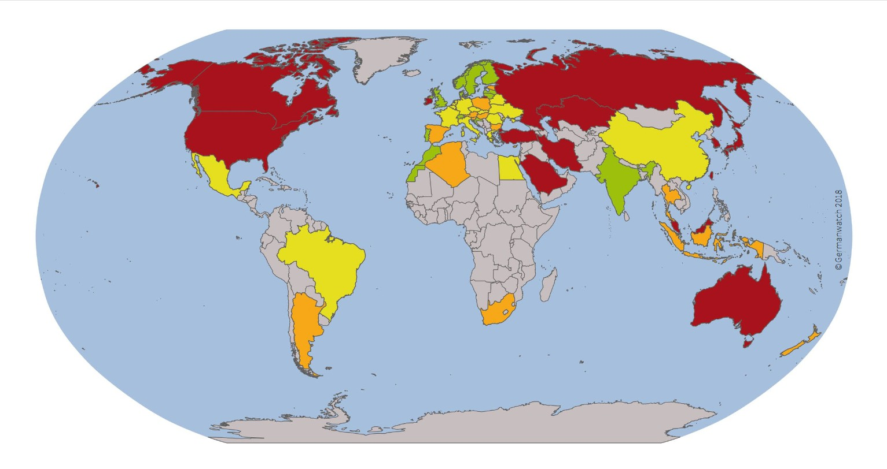
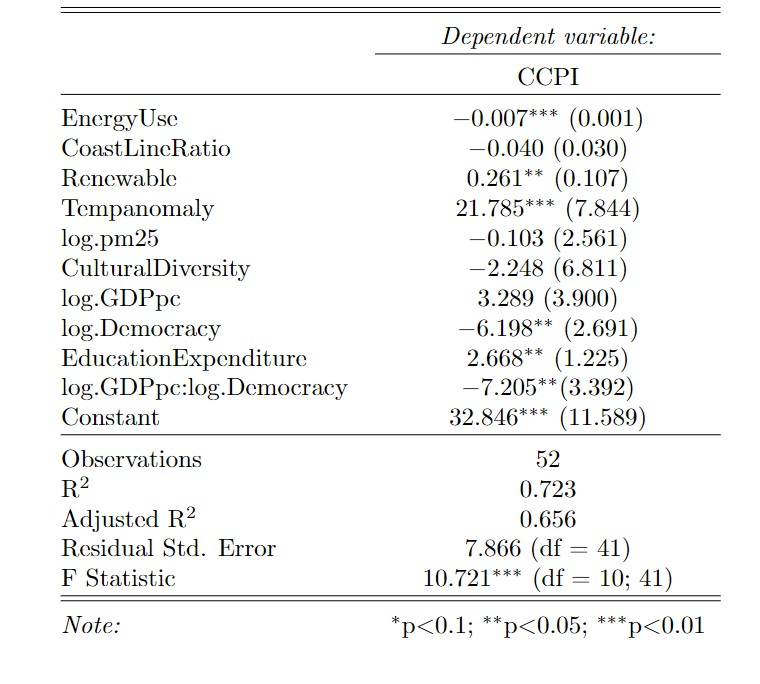

Social Influences on Climate Change Efforts of Countries
Image scource: Overall Results CCPI 2019, Germanwatch, NewClimate Institute & Climate Action Network
Scope
56 countries whose climate protection performances were evaluated by CCPI 2019.
Variables
Reponse Variables
Climate Change Performance Index (CCPI) as a proxy of countries' efforts on fighting climate change
Explanatory Variables
- Energy Use (Energy consumption in oil equivalent per capita, kg)
- Coast Line Ratio (Ratio of coastline to area, m/km2))
- Renewable (Renewable energy as percent of total energy consumption in 2014, %)
- Temperature Anomaly (Average projected temperature change from 2020 to 2039, ◦C)
- PM2.5 Concentration (Mean annual exposure of PM2.5 air pollution, mg/cm3)
- Culture Diversity (Degree of similarity of structural relationship between languages)
- GDPpc (GDP per capita, $)
- Democracy Score (Level of political rights and civil liberties in a nation in 2018)
- Education Expenditure (Government expenditure on education as percent of GDP in most recent year, %)
Method
Multiple Linear Regression
Packages
- ggplot2
- lmtest
- tidyr
- olsrr
- car
- GGally
- broom
- moments
- stargazer
- gvlma
R Code
##Dataset preparation##
getwd()
setwd()
CCPI<- read.csv("dataset_CCPI.csv")
#Boxplot & histogram of CCPI
boxplot(CCPI$CCPI,data=CCPI, main="CCPI Data (Sample Size = 56)", xlab="Countries", ylab="CCPI")
hist(CCPI$CCPI, main="CCPI Data (Sample Size = 56)", xlab="CCPI", xlim=c(0,100),ylim=c(0,20), col="light blue")
##Excluding country with too many NAs##
Data<-CCPI[-which(CCPI$Country=='Chinese Taipei'),]
##Log transformation and Demean##
Data$log.<-log(Data$GDPpc)-10.4
Data$log.pm25<-log(Data$pm25)
Data$log.Democracy<-log(107-Data$DemocracyScore)-3.1
##Correlation Plot##
columns<-c(3,4,5,6,7,8,9,10,11,2)
ggpairs(Data, columns = columns, title = "",axisLabels = "show")
columns<-c(4,6,7,9,10,11,12,13,14,2)
ggpairs(Data, columns = columns, title = "",axisLabels = "show")
head(Data)
###Model###
model<-lm(CCPI ~ EnergyUse + CoastLineRatio + Renewable + Tempanomaly + log.pm25
+ CulturalDiversity + log.GDPpc*log.Democracy + EducationExpenditure, na.action = na.exclude, data=Data)
summary(model)
#Fitted vs. Residuals & QQ plot#
par(mfrow=c(1,1))
plot(model)
#Breusch-Pagan Test#
lmtest::bptest(model)
#Multiconlinearity#
vif<-car::vif(model)
cor(Data$log.Democracy, Data$log.GDPpc, use = "complete.obs")
#Farrar – Glauber Test#
X<-Data[,c(4,6,7,9,10,11,12,13,14)]
omcdiag(X,Data$CCPI)
imcdiag(X,Data$CCPI)
#Cooke's Test of Outliers#
ols_plot_cooksd_bar(model)
#Relevant values#
glance(model) %>%
dplyr::select(adj.r.squared, sigma, AIC, p.value)
#Assumptions General Test
model.1<-lm(CCPI ~ EnergyUse + CoastLineRatio + Renewable + Tempanomaly + log.pm25
+ CulturalDiversity + log.GDPpc*log.Democracy + EducationExpenditure, data=Data)
gvmodel <- gvlma(model.1)
summary(gvmodel)
#Results output from stargazer#
stargazer(Data,header = F, median = TRUE)
stargazer(model,header = F)
stargazer(vif,header = F)Overview of Results
 The regression results show that temperature anomaly, education expenditure, interaction of GDPpc and democracy level have significant relationships with CCPI when other variables are held constant. Particularly, countries with higher education expenditure, higher predicted temperature anomaly and higher democracy level tend to perform better on fighting climate change. The effect of GDPpc is dependent on democracy level. There are three observations deleted due to missings in data. The adjusted R2 is 0.656 with F statistics of 10.721(df = 10;41).
Data Sources
- The World Bank.
- The Word Factbook, Geography, Coastline. CIA. Page last updated December 06, 2019
- Change Knowledge Portal, World Bank Group.
- Freedom in the World.
- JAMES D. FEARON. Ethnic and Cultural Diversity by Country. Journal of Economic Growth, Vol. 8, No. 2 (Jun., 2003), pp. 195-222. https://www.jstor.org/stable/40215943